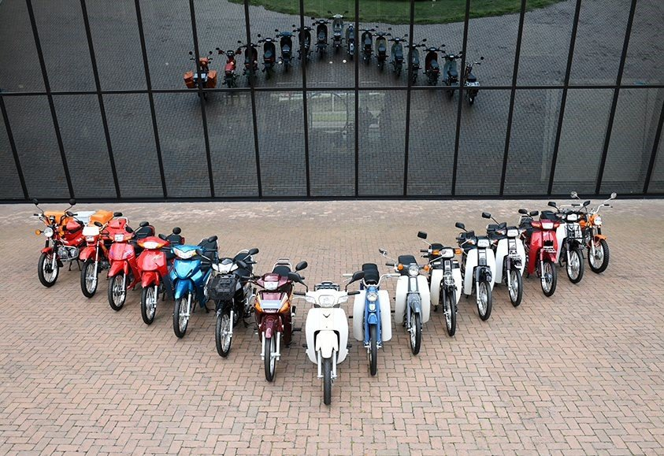

Motorcicle
Vespa
HareyDaivison
Honda
혼다
모터사이클, 자동차, 제트스키, 항공기, 로봇 등을 주로 제작하는 일본의 모빌리티 기업. 사실상 모터나 엔진이 달린 건 다 만든다고 보면 된다. 뛰어난 기술력으로
오토바이(모터사이클)
분야에서는 전세계 판매량 1위를 지키고 있으며,[3] 자동차 분야에서는 일본과 북미에서 토요타 다음가는 판매량과 평판을 가지고 있다. 현재 뉴욕증권거래소와 도쿄증권거래소에 상장해 있다. 